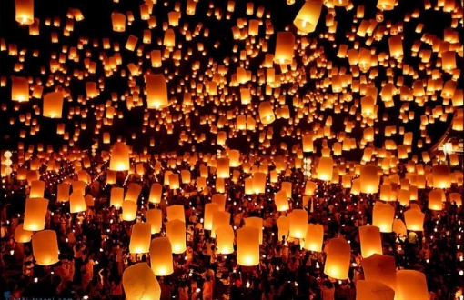
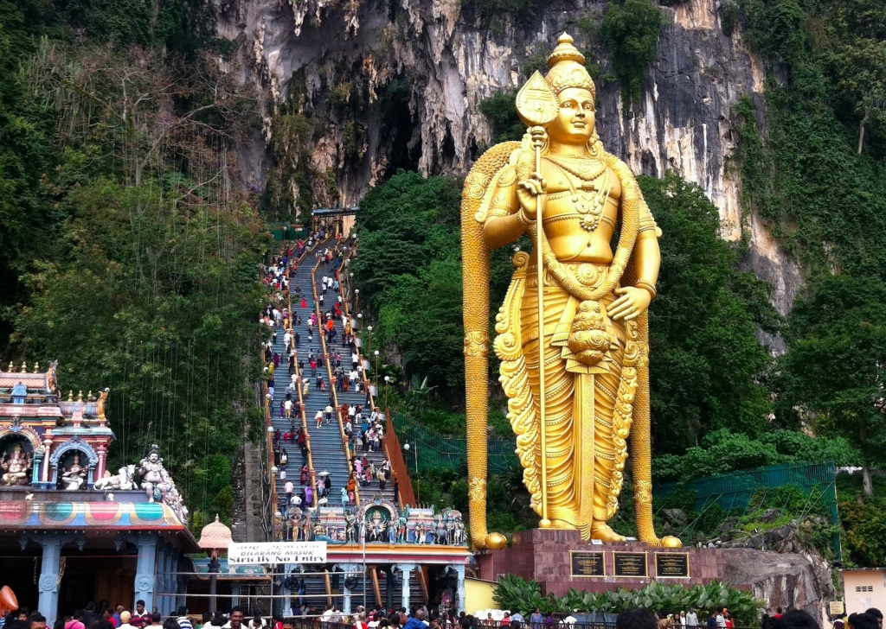
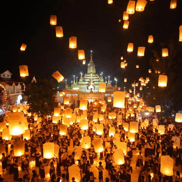

Fêtes Principales
-
Hari Raya Aidilfitri
Hari Raya Aidilfitri : Célébrée à la fin du mois sacré du Ramadan (selon le calendrier lunaire islamique, généralement en avril ou mai), cette fête marque la rupture du jeûne. Les familles se rendent à la mosquée pour la prière du matin, puis visitent parents et amis pour demander pardon et renforcer les liens. Les maisons sont décorées, on prépare des plats traditionnels comme le rendang, le ketupat (gâteau de riz enveloppé dans des feuilles de palmier) et on offre le duit raya (petites enveloppes d’argent) aux enfants. C’est un moment de grande générosité et d’hospitalité, où la tradition du open house permet à tous de partager les festivités.
-
Nouvel An chinois
Nouvel An chinois : Fêté par la communauté chinoise entre fin janvier et mi-février (date variable selon le calendrier lunaire), il symbolise le renouveau et la prospérité. Les festivités durent 15 jours, débutant par un grand dîner familial la veille. Les maisons sont décorées de lanternes rouges et de caractères porte-bonheur. Les danses du lion et du dragon, les pétards pour chasser les mauvais esprits, et la distribution d’enveloppes rouges (ang pao) aux enfants sont incontournables. Le dernier jour, appelé Chap Goh Mei, est marqué par des célébrations spéciales.

-
Deepavali
Deepavali : Aussi appelée Diwali, cette fête hindoue des lumières a lieu entre octobre et novembre. Elle symbolise la victoire de la lumière sur les ténèbres. Les familles nettoient et décorent leur maison avec des lampes à huile (diyas) et des motifs de riz coloré (kolam). On prépare des mets sucrés comme le laddu, on visite les temples pour des prières spéciales et on porte des vêtements traditionnels neufs et colorés. Les portes restent ouvertes pour accueillir voisins et amis, quelle que soit leur religion.

-
Thaipusam
Thaipusam : Célébrée principalement par la communauté tamoule en janvier ou février, cette fête religieuse honore le dieu Murugan. Les fidèles effectuent des processions impressionnantes, notamment vers les grottes de Batu Caves près de Kuala Lumpur. Certains pratiquants portent des kavadis (structures décorées, parfois fixées à la peau par des crochets) en signe de pénitence ou de remerciement pour des vœux exaucés. C’est un événement spectaculaire, mêlant ferveur, musique et couleurs.

-
Hari Gawai
Hari Gawai : Fête des moissons célébrée le 1er juin par les peuples indigènes Dayak du Sarawak (Bornéo). Elle marque la fin de la récolte du riz et le début d’une nouvelle année agricole. Les festivités incluent des danses traditionnelles (ngajat), des chants, des costumes colorés, des cérémonies rituelles et la dégustation de tuak (vin de riz). C’est un moment de rassemblement communautaire et de gratitude envers les ancêtres.

-
Wesak
Wesak : Fête bouddhiste célébrée en mai, elle commémore la naissance, l’illumination et la mort de Bouddha. Les temples sont décorés, les fidèles participent à des processions, font des offrandes de fleurs et de nourriture, et pratiquent la méditation. Des lanternes sont souvent allumées pour symboliser la lumière de la sagesse. C’est un jour de réflexion, de générosité et de paix.
